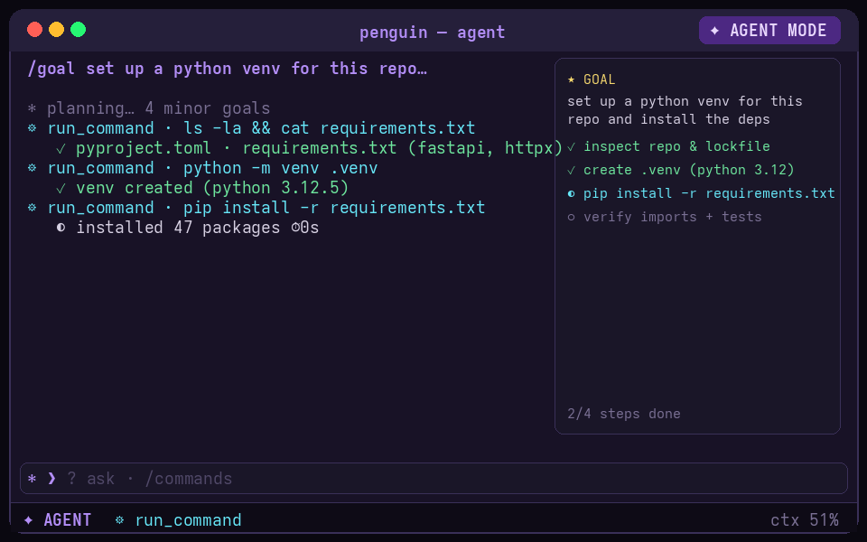
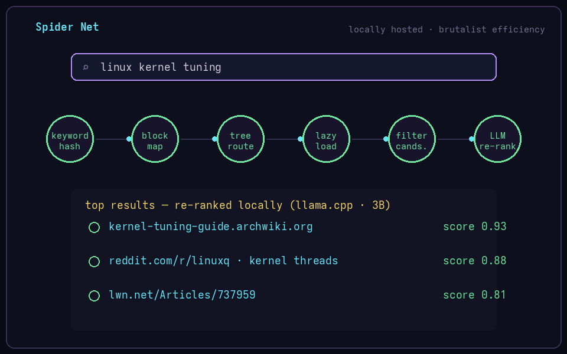

🐧 Penguin Command
Cross-platform terminal AI agent in Rust. Custom VTE emulator, safety policy engine, goal autonomy, provider-agnostic LLM backend.

🕸 Spider Net
Locally hosted search engine with interest-scored crawling, block-compressed inverted index and local LLM re-ranking. Live on my LAN.
🧪 Evaluation Protocol
Eight enforceable research gates born from six projects' own wrong-but-plausible results — including two retracted headline positives.
🧭 Beyond Retrieval
Seven attention mechanisms, none beating dense — then verifier-guided decoding dominating attention choice by an order of magnitude. 17 experiments, leak-free.

📐 Matched-Cost Architecture Studies
Fractal weight-tying vs dense transformers at matched inference cost — dominance curves, oracle bounds and a metastable forward map.

🧮 HMoE Funnel Routing
Mixture-of-experts funnel routing with plateau-matched generalisation checks and routed-fraction thresholds — where the compute actually is.
🧰 The unglamorous 90%
Cross-platform installers, systemd watchdogs, Docker pipelines, shell integration for bash/zsh/fish/PowerShell — the plumbing that makes demos into products.